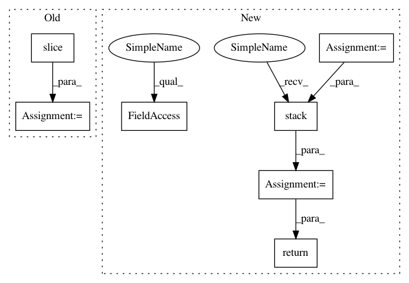

080700865e68f22295b296e097032baa89231d99,models/official/resnet/resnet_preprocessing.py,,distorted_bounding_box_crop,#Any#Any#Any#Any#Any#Any#Any#,69
Before Change
bbox_begin, bbox_size, distort_bbox = sample_distorted_bounding_box
// Crop the image to the specified bounding box.
cropped_image = tf.slice(image, bbox_begin, bbox_size)
return cropped_image, distort_bbox
def _random_crop(image, size):
After Change
// Crop the image to the specified bounding box.
offset_y, offset_x, _ = tf.unstack(bbox_begin)
target_height, target_width, _ = tf.unstack(bbox_size)
crop_window = tf.stack([offset_y, offset_x, target_height, target_width])
image = tf.image.decode_and_crop_jpeg(image_bytes, crop_window)
image = tf.image.convert_image_dtype(
image, dtype=tf.float32)
return image
def _at_least_x_are_equal(a, b, x):
At least `x` of `a` and `b` `Tensors` are equal.
In pattern: SUPERPATTERN
Frequency: 3
Non-data size: 7
Instances
Project Name: tensorflow/tpu
Commit Name: 080700865e68f22295b296e097032baa89231d99
Time: 2018-04-13
Author: huangyp@google.com
File Name: models/official/resnet/resnet_preprocessing.py
Class Name:
Method Name: distorted_bounding_box_crop
Project Name: GPflow/GPflow
Commit Name: bd1e9c04b48dd5ccca9619d5eaa2595a358bdb08
Time: 2020-01-31
Author: st--@users.noreply.github.com
File Name: gpflow/kernels/misc.py
Class Name: ArcCosine
Method Name: K_diag
Project Name: tensorflow/tpu
Commit Name: 080700865e68f22295b296e097032baa89231d99
Time: 2018-04-13
Author: huangyp@google.com
File Name: models/official/resnet/resnet_preprocessing.py
Class Name:
Method Name: distorted_bounding_box_crop
Project Name: GPflow/GPflow
Commit Name: bd1e9c04b48dd5ccca9619d5eaa2595a358bdb08
Time: 2020-01-31
Author: st--@users.noreply.github.com
File Name: gpflow/kernels/linears.py
Class Name: Linear
Method Name: K_diag